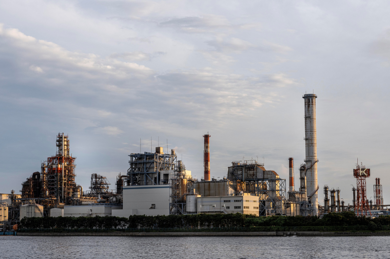

RELIABILITY
Consistent delivery of quality products and services. A dependable foundation for every operation.

BUILT FOR NIGERIA’S INDUSTRIAL LANDSCAPEFirst Interstate Petrochemicals Ltd. connects Nigeria’s industrial ambitions with dependable energy solutions.
From downstream supply to regional operations, we combine local expertise with international standards. Reliability, safety and strategic partnership drive every initiative.
Sourcing, logistics and distribution of essential petrochemical products for manufacturing and energy partners.
Localized downstream support through our presence in Lagos, Abuja and Akwa Ibom.
Strategic advice informed by our leadership’s understanding of Nigeria’s economic and energy landscape.
Strategic involvement in upstream oil and gas exploration, supporting the development of Nigeria’s energy sector.
Consistent delivery of quality products and services. A dependable foundation for every operation.
High standards of environmental and occupational safety, embedded in the way we work.
Long-term relationships with clients and stakeholders. Shared ambitions. Sustainable progress.
To deliver sustainable energy solutions through innovation, integrity, and operational excellence across Nigeria’s industrial landscape.
✳Visionary leadership with deep roots in Nigeria’s economic and diplomatic sectors.
01Driving operational excellence and strategic growth across all divisions.
02Overseeing operational activities and regional infrastructure.
0310, Unit 1, Udi Street,
Osborne Foreshore Estate,
Ikoyi, Lagos State
Elpanthomath Park, 14B, Accra Street,
Wuse, Zone 5,
Abuja FCT
Plot 25, Esuene Street,
Federal Housing Estate,
Off IBB Way, Uyo
We specialize in downstream solutions, petrochemical distribution, regional energy logistics, industrial consulting and strategic oil exploration initiatives.
Our head office is in Ikoyi, Lagos, with a regional office in Abuja and operations in Uyo, Akwa Ibom.
Call our operations team on +234 903 333 2780 or email firstinterstate.petrochem@gmail.com with your requirements.
Contact us on +234 809 312 6000 to discuss energy projects, industrial consulting or strategic partnership opportunities.
Dependable energy. Industrial expertise.
A partner invested in your progress.